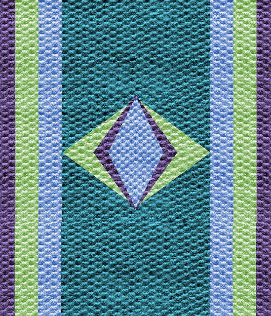

ANA
Hola mundo! En esta web os voy a contar alguna información sobre mí.
Mis datos personales
- Nombre: Ana
- Edad : 29
- Lugar de nacimiento: Madrid
- Formación: Educación Social
Mis aficiones
Me gusta mucho patinar. Empecé cuando tenía 12 años y desde entonces no he parado de aprender. Para estar en forma y no perder habilidades procuro ir una vez a la semana al parque de Madrid Río, ya que allí tenemos un largo recorrido para patinador@s.

También me gusta la música y a menudo voy a conciertos.

Y otra de mis aficiones es la cocina. A continuación os voy a mostrar las recetas que más me gusta cocinar.

Mis recetas preferidas
| Plato | Lugar de origen | Tiempo |
|---|---|---|
| Paella | Comunidad Valenciana | 1h |
| Cocido | Madrid | 1h y 15' |
| Migas | Zamora | 45' |
| Fabada | Asturias | 1h y 15' |
| Cordero asado | Segovia | 2h y 15' |
En los siguientes enlaces podeis encontrar las recetas detalladas: